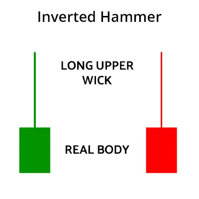
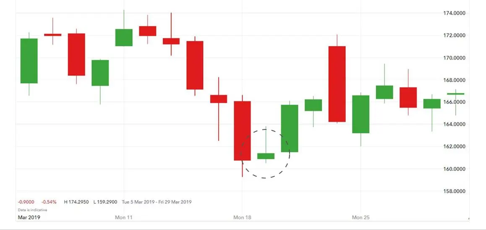

The Inverted Hammer candlestick formation occurs mainly at the bottom of downtrends and can act as a warning of a potential bullish reversal pattern.
What happens on the next day after the Inverted Hammer pattern is what gives traders an idea as to whether or not prices will go higher or lower.
| What Does the Inverted Hammer Look Like? |
The Inverted Hammer formation is created when the open, low, and close are roughly the same price. Also, there is a long upper shadow which should be at least twice the length of the real body.
Let’s take a simple example:
The above price action will create a candle that looks like an ‘inverted hammer’.
Simple as that.
| Inverted Hammer Trading Strategy |
Observe the chart below and notice how the price of a company called ‘United Spirits’ had been falling continuously for several days. This happened in March 2020.

Now, focus on the bottom-most candle which is an ‘inverted hammer’,
After a big fall on the previous day, the stock opens below, rises high, and then closes slightly above the opening price. This creates the ‘inverted hammer’.
This is the first signal that the stock has fallen enough and it could now rise upwards.
Traders would now wait for the next candle. If that is green, the stock should be bought when the price goes above the ‘high’ of the ‘inverted hammer’.
The stop loss would be the ‘low’ of the ‘inverted hammer’ candle.
To explain this more clearly, we have taken only the three candles from the above chart and marked the inverted hammer trading strategy.

Let me repeat.
Once the ‘inverted hammer’ candle is formed on the chart – the trader waits for the next candle.
If the next candle is red and the price falls below the ‘inverted hammer’, the pattern has failed. No trades should be taken.
If the next candle is green and the price goes higher – the trader waits till the price goes above the high of the ‘inverted hammer’.
This confirms that the buyers are in control and the price could go higher.
The stock is bought. A strict stop loss is set at the bottom price of the ‘inverted hammer’ – as clearly illustrated in the above image.
Do note, a stop loss is very important and an absolute must for every trade you take. If the price goes below the ‘inverted hammer’ candle – it means the reason we took the trade has failed.
The loss has to be taken. This is part of the discipline, which is arguably the most important aspect of becoming a successful trader.
Always take small trades in the beginning. Learn to take profits, learn to take losses. Your mind will slowly get conditioned to accept both.
Remember, not every trade can be successful. Even the best of traders only get 6-7 out of 10 trades right. And we talking about the best traders here. New traders have much lower success ratio.
As a trader gains experience, he can tweak and create his own trading strategy. This takes time and effort. In the beginning, concentrate on learning and observing the charts.
| Inverted Hammer for Long-Term Investors |
Long term investors can wait for ‘trend reversal’ candlestick patterns to buy quality stocks close to the bottom.
On March 23, 2020, when the Indian stock market hit a low after crashing for many days – due to Covid-19 – many stocks formed ‘inverted hammer’ and ‘hammer’ on the chart.
If the market is witnessing a significant fall – even long-term investors who are waiting for the ‘bottom’ of quality stocks – can take positions when such ‘trend reversal’ candles are formed on the chart.
They could start with a small position and buy more once the stock begins to rise.
There is a saying in the market – “never catch a falling knife”.
When the market is falling and stocks are crashing every day – like it happened in March 2020 – a good strategy is to wait till markets stabilize.
Let the market complete the correction and show signs that it is about to rise. You might have to buy 10-15% higher than the bottom, but in most cases – your average price will be lower than ‘averaging down’ from the beginning of the correction.
| Inverted Hammer Infographic |

| Is an Inverted Hammer Candlestick Bullish or Bearish? |
After a long downtrend, the formation of an Inverted Hammer is bullish because prices hesitated to move downward during the day.
Sellers pushed prices back to where they were at the open, but increasing prices shows that bulls are testing the power of the bears.
| Green vs Red Inverted Hammer |
When the low and the open are the same, a bullish, green Inverted Hammer candlestick is formed and it is considered a stronger bullish sign than when the low and close are the same (a red Inverted Hammer).
